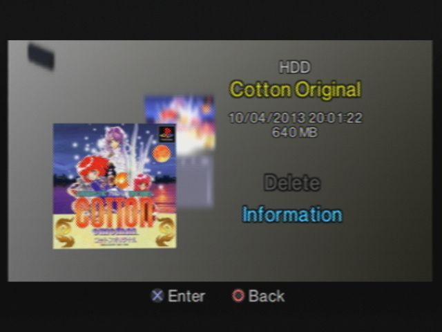

POPSTARTER Hddosd
Recovered from the ShaolinAssassin wiki · snapshot 20170629123623
[HDD] HDDOSD / POPStarter.KELF
POPStarter bundle always come with a file named “POPStarter.KELF”. This file allows you to install POPStarter in the PS2 Broswer 2.00 – aka HDDOSD. Let’s find out how.
Hardware Requirements :
-
PS2 HDD formatted, locally connected to your PC ;
-
NA ;
-
A crossover cable ;
Software Requirements :
-
uLE_kHn : here ;
-
POPStarter.KELF : here ;
-
AKuHAK’s reworked HDL_Dump : here ;
-
HDDOSD already installed on your PS2 HDD (note : there was a bug with 1.00J HDDOSD version – fixed in WIP 6 OBT 17)..
To install POPStarter in HDDOSD, you will need :
. to use the first HDD launch type (1 game = 1 partition). You can’t do it with the __.POPS partition. Your game partition will be a parent partition named PP.Name_of_my_Game.
. to inject some files into the partition header, to make it bootable from HDDOSD + to display infos related to your game + to customize the icon shown in the HDDOSD.
Set-by-step :
1. [PS2] – First – if you don’t have it yet – install POPS (copy/paste IOPRP252.IMG & POPS.ELF into __common/POPS/).
2. [PC] – Convert your game as .VCD file.
3. [PS2] – Using uLE_kHn, create a partition large enough to store your game. Name it as PP.Name_of_my_Game. Example : PP.Cotton_Original. (! no “+” in the partition name, no whitespaces !)
4. [PS2] – Transfer your VCD into your PP.Name of my Game partition and rename it IMAGE0.VCD.
5. [PS2] – Rename POPStarter.KELF as EXECUTE.KELF and copy/paste it into your PP.Name of my Game.
Your files should look like this :
__common/POPS/IOPRP252.IMG
__common/POPS/POPS.ELF
PP.Cotton_Original/EXECUTE.KELF
PP.Cotton_Original/IMAGE0.VCD
Before you can inject the files into the partition hearder, you need to get them ready for your particular game.
6. [PC] – Download the sample files. The .7z includes :
-
system.cnf = this file tells the PS2 where to look at for launching POPStarter (BOOT2 = pfs:/EXECUTE.KELF in system.cnf means that the file that will be launched from HDDOSD is EXECUTE.KELF, placed into the root of the partition).
-
list.ico = this file is a PS2 icon, made by myself using my profile picture from PSX-scene. You can learn how to create your own icons here (very easy). If you want that HDDOSD displays a special image when you are about to delete a game/partition, repeat the process and name this file del.ico.
-
icon.sys = this files contains the infos that will be displayed in the HDDOSD. You need to edit it and fill some info inside. Use Notepad++.
PS2X
title0=Cotton Original // What will be displayed on the first line of the HDDOSD. Can be anything. I choose the name of the game. 16 caracters max.
title1=[SLPM-86461] // What will be displayed on the 2nd line of the HDDOSD. Can be anything. I choose the <game_ID> of the game. 16 caracters max.
bgcola=0 // Background's alpha value.
bgcol0=0,0,0 // Background's upper-left color (R,G,B).
bgcol1=0,0,0 // Upper-right.
bgcol2=0,0,0 // Lower-left.
bgcol3=0,0,0 // Lower-right.
lightdir0=1.0,-1.0,1.0 // Direction of light source 0 (X,Y,Z).
lightdir1=-1.0,1.0,-1.0 // Direction of light source 1 (X,Y,Z).
lightdir2=0.0,0.0,0.0 // Direction of light source 2 (X,Y,Z).
lightcolamb=64,64,64 // Ambient color (R,G,B).
lightcol0=64,64,64 // Color of light source 0 (R,G,B).
lightcol1=16,16,16 // Color of light source 1 (R,G,B).
lightcol2=0,0,0 // Color of light source 2 (R,G,B).
uninstallmes0= Voulez-vous supprimer ce jeu ? // Uninstall warning message.
uninstallmes1= // Ignored if uninstallmes0 is 0 chars.
uninstallmes2= // Ignored if uninstallmes0/1 is 0 chars.
7. [PC] – So, create your icon(s) and edit icon.sys according to your will.
8. [PC] – Download AKuHAK’s reworked HDL_Dump zip folder, extract it at the root of your PC (C:), and delete boot.elf file from inside (it’s miniopl – we don’t need it).
9. [PC] – Drop your system.cnf, list.ico, icon.sys inside hdl_dumx folder. Hdl_dumx folder content :
- hdl_dumb.exe - no GUI version
- hdl_dump.exe - GUI version
- icon.sys
- list.ico
- system.cnf
10. [PS2] – Connect your PS2 to your PC using a crossover cable, and launch hdl_svr_0.93.elf using uLE from it.
11. [PC] – Launch command promt.
12. [PC] – Type :
cd C:\hdl_dumx_rev47\
13. [PC] – then :
C:\hdl_dumx_rev47\hdl_dump.exe modify_header 192.168.0.5 PP.Cotton_Original
192.168.0.5 = your PS2 IP adress ;
PP.Cotton_Original = your partition.
14. [PC] – if you got it working you should get a message like this :
Succesfully read system.cnf = system.cnf injected into partition header
Succesfully read icon.sys
Succesfully read list.ico
Skipped del.ico = del.ico file missing from hdl_dumx folder
Skipped boot.kelf
Skipped boot.elf
Skipped boot.kirx
15. Done ! ;)
Note : when POPStarter gets an update, delete the file EXECUTE.KELF from PP.Name_of_my_Game and replace it with the new version.
Images & screenshots
